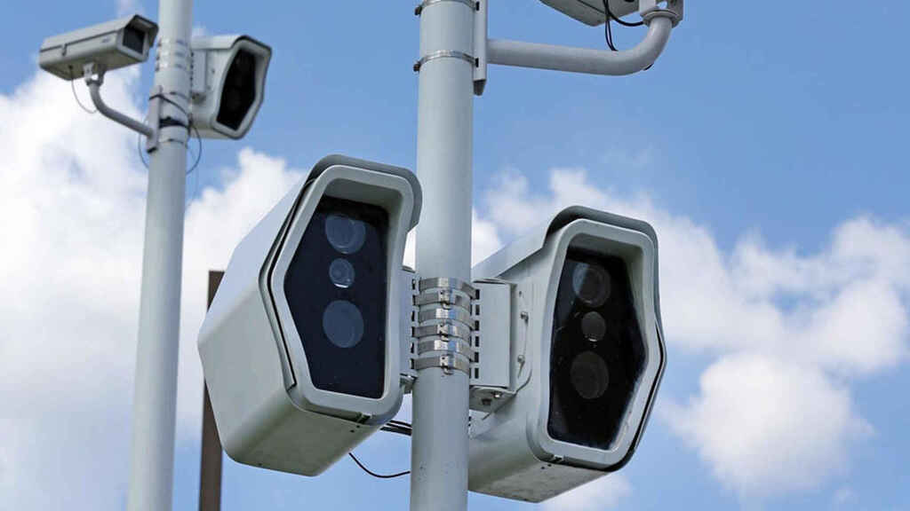

Justificación:
Los semáforos inteligentes en los últimos tiempos sabemos que se han convertido en unas de las mejores soluciones para el movimiento de vehículos, y todo esto han llegado a todas las ciudades donde esta tecnología desarrolló más y tienen recursos económicos.

Procedimiento:
En los semáforos inteligente va a capturar en los largos tiempos de espero en los vehículos que van a circular en cada semáforo y con mayor incremento de tráfico ya que algunos tienen un sensor en el piso así como los semáforos para que puedan dar el tiempo adecuado y pasen los carros de manera rápida.
Precaución:
Solo se podra girar hacia la derecha o seguir de frente